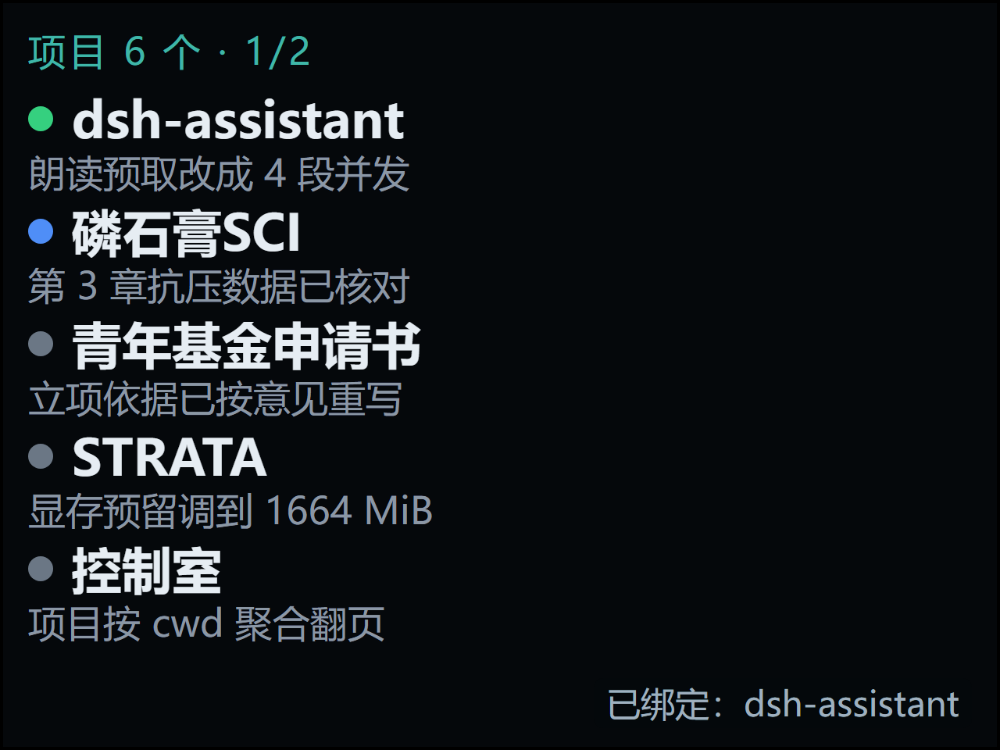
五个真实项目同屏，绿 / 蓝 / 灰三色状态点，状态栏写「项目 6 个 · 1/2」。
痛点 · 手机里翻会话要滑半天，看不出哪个项目正在跑。
2.4″ 320×240 触摸屏 · 14 屏 · 文案 / 字号 / 颜色取自 src/tihu/page.ts 与 src/tihu/lane.ts

五个真实项目同屏，绿 / 蓝 / 灰三色状态点，状态栏写「项目 6 个 · 1/2」。
痛点 · 手机里翻会话要滑半天，看不出哪个项目正在跑。
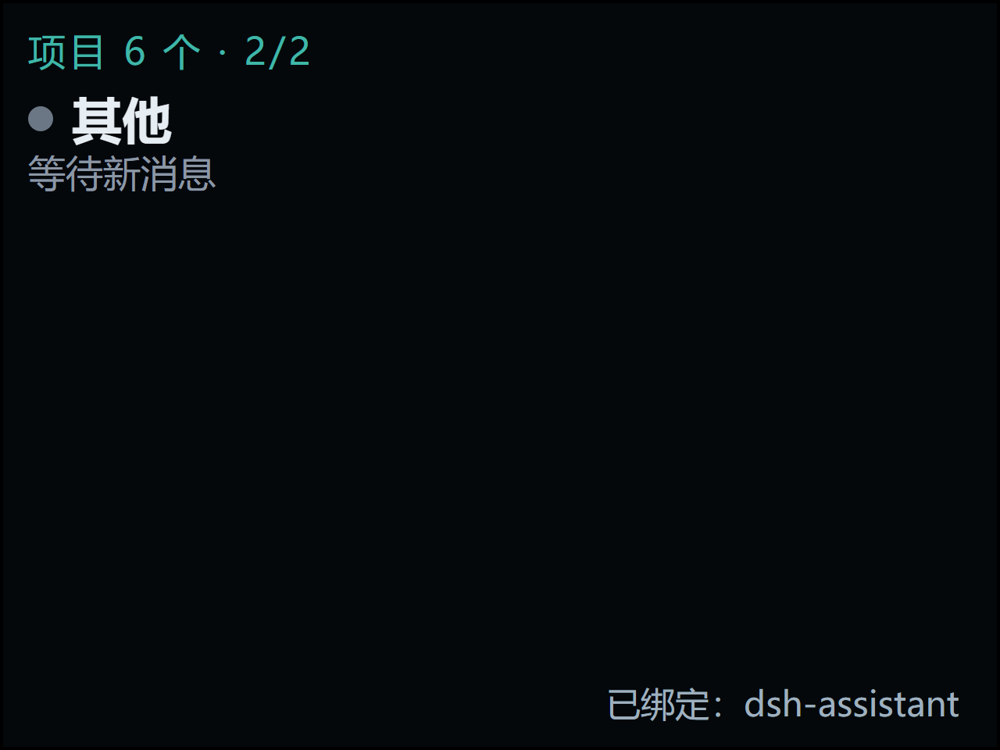
上滑翻页，页码变 2/2，承接第 6 个项目「其他」。
痛点 · 项目一多一屏放不下，又不能退化成没有尽头的长列表。
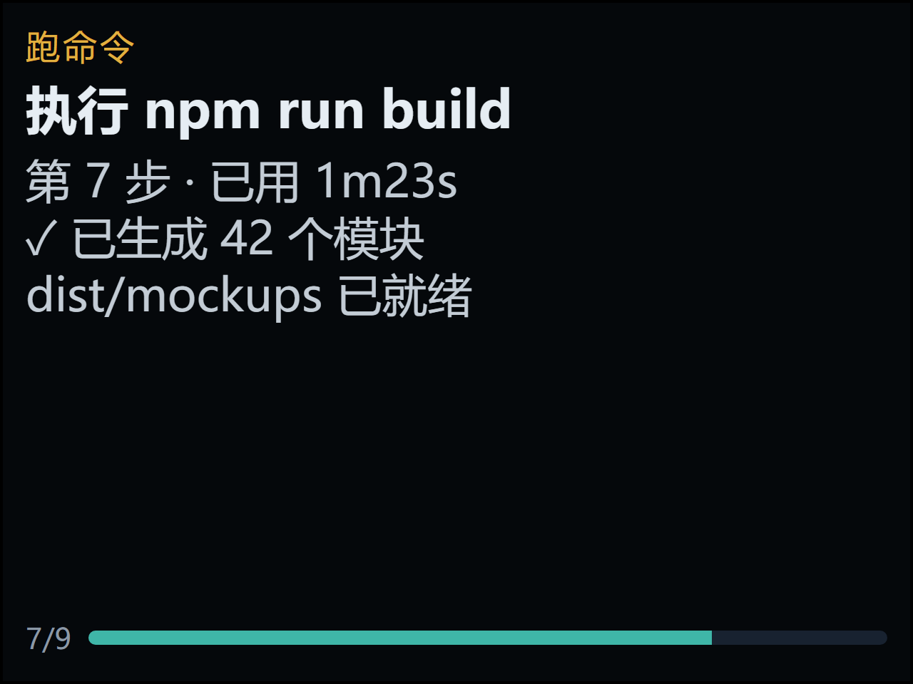
阶段、第 7 步、已用 1m23s 与 7/9 进度条同屏。
痛点 · 语音交代完只剩干等，不知道它干到哪一步、还要多久。
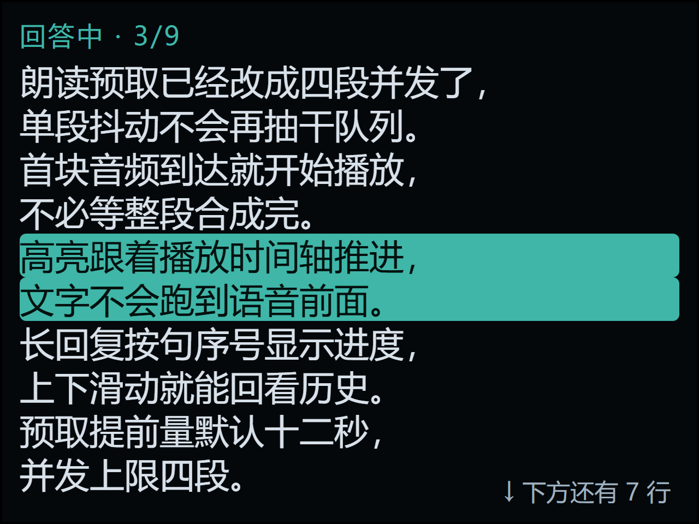
十行正文窗口，当前句整行反色，右下提示「下方还有 7 行」。
痛点 · 朗读没有视觉落点，听到一半不知道读到哪一句。
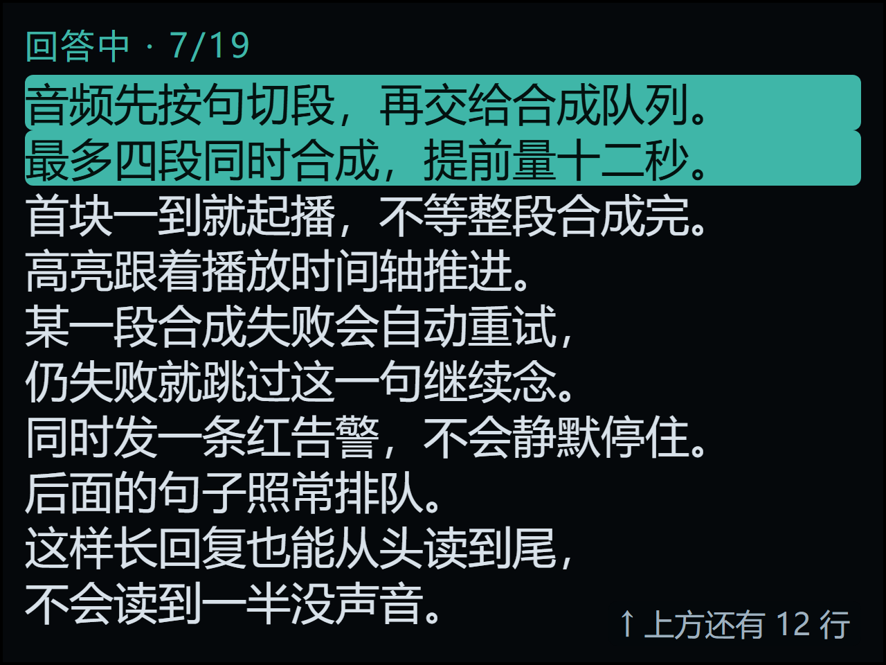
状态栏给出 7/19 句序号，上滑停在历史位置，提示上方还有 12 行。
痛点 · 长回答念过去就找不回，想重听前文只能从头再来。
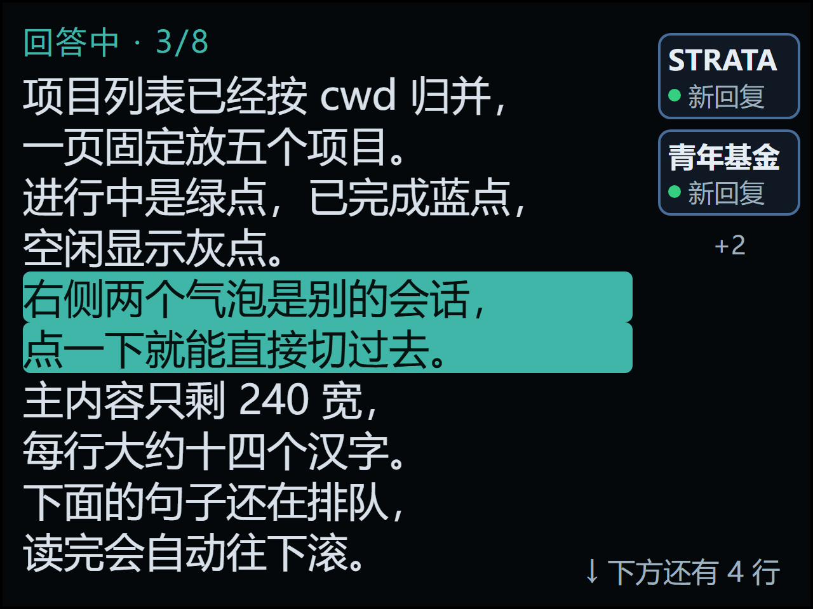
右侧 64px 气泡轨：两个新回复球 + 「+2」角标，正文压到 240px。
痛点 · 别的会话完成了不知道，切过去还得先回主页找。
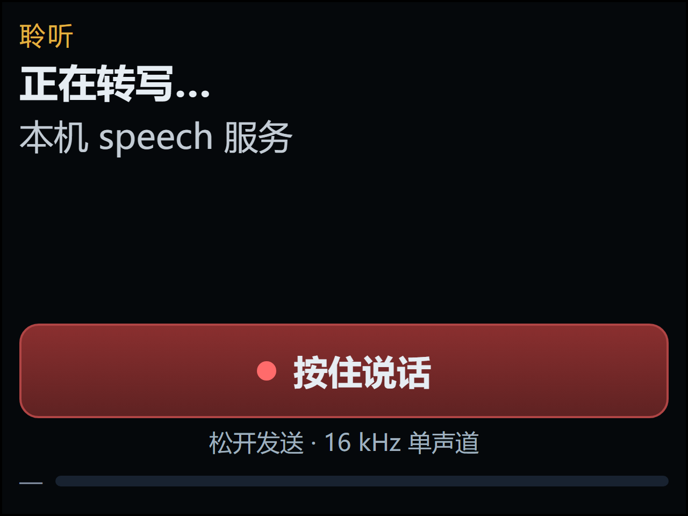
「聆听 / 正在转写…」+ 红色「按住说话」录制态，松开发送。
痛点 · 不知道麦克风有没有在录、有没有在识别，只能猜。
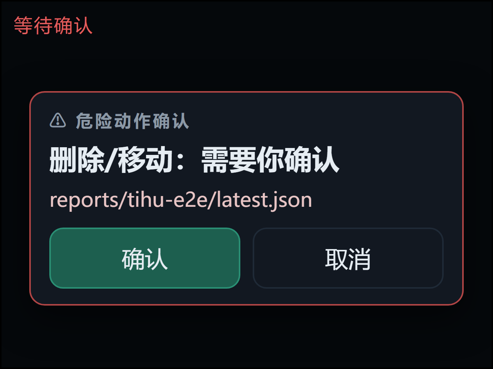
confirm.ask 弹窗：动作名、目标路径、确认 / 取消双键。
痛点 · 删除、覆盖、执行命令不能在语音里默认放行。
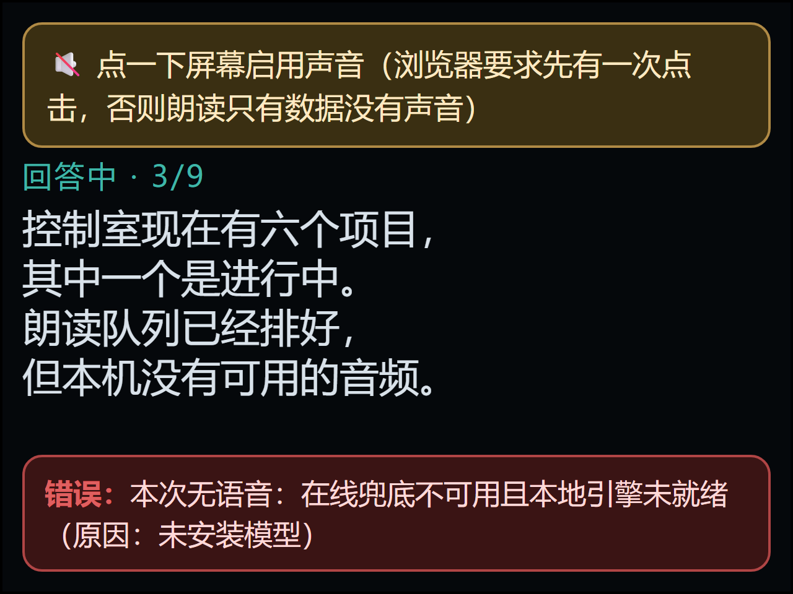
琥珀色「点一下屏幕启用声音」条 + 红色「本次无语音」告警同屏。
痛点 · 静音策略或 TTS 挂掉时，看起来像在读其实没声。
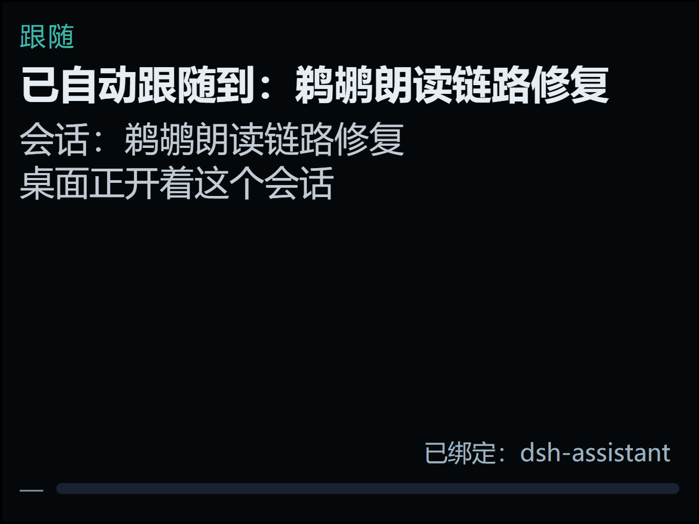
「已自动跟随到：会话标题」，并说明桌面是否正开着该会话。
痛点 · 多会话并行时，不知道这句话到底注入了哪一条。
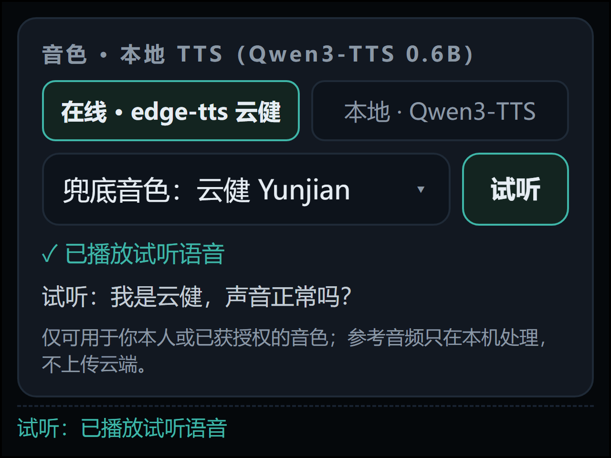
edge-tts 云健 / 本地 Qwen3-TTS 两档切换，试听回执「已播放试听语音」。
痛点 · 换音色后没声，分不清是合成失败还是播放被浏览器拦了。
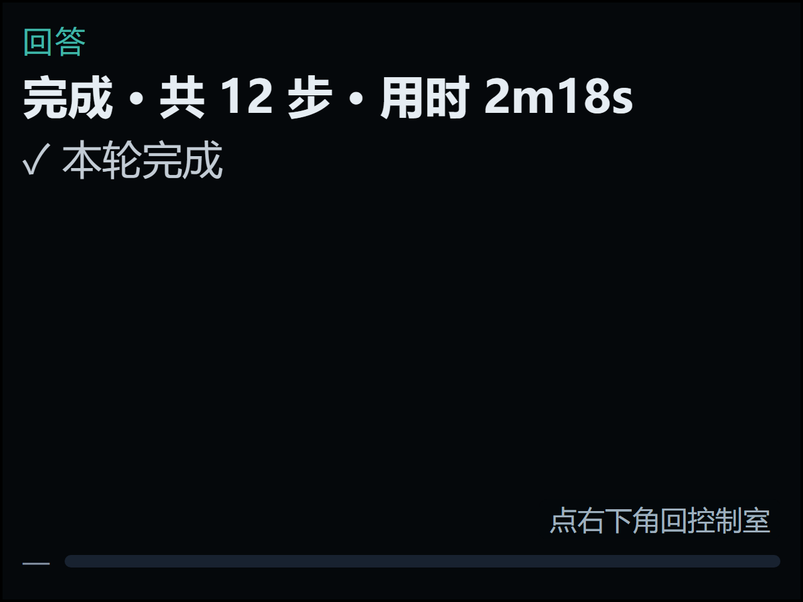
「完成 · 共 12 步 · 用时 2m18s」，右下角点按可回控制室。
痛点 · 任务结束后停在旧界面，不知道怎么回主页。
所有会话停止、朗读播完后自动回主页，状态点全部转为蓝 / 灰。
痛点 · 长回复读到一半被切主页，或干完活屏幕一直停在旧状态。
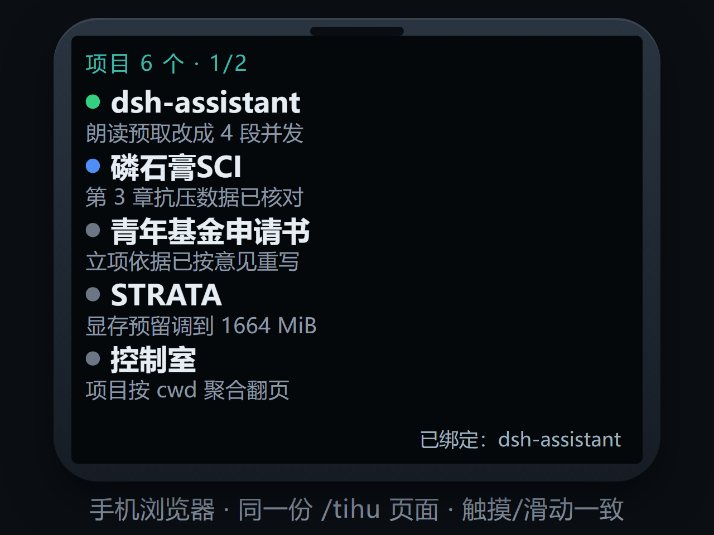
同一份 /tihu 页面放进手机外框，触摸 / 滑动与真机一致。
痛点 · 离开电脑想瞄一眼进度，不想再装第二个 App。